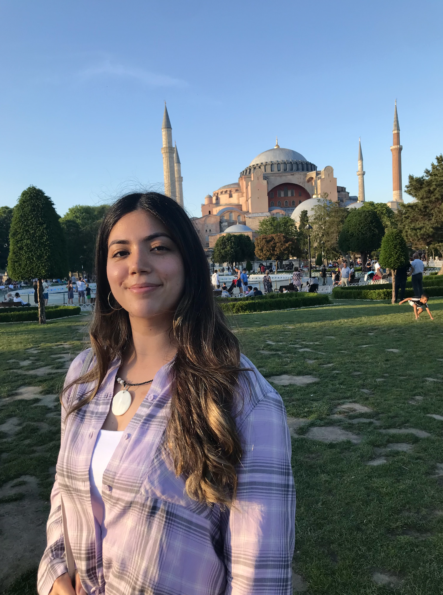

About Me
Merhaba! (Hello!)

Hello! I'm Helin and I am a third-year undergraduate student double majoring in
Data Science and Health & Human Sciences at USC, with a specialization in web development.
For the course, ITP 104: Introduction to HTML Web Development, we
were given the opportunity to explore our creative interests by developing a website of
our choosing for our final project. As someone who visits Istanbul, Turkey
nearly every summer to spend time with my grandparents, I consider myself an expert
on the best places to visit in the city, and I wanted
to share this insight with others. Feel free to explore this website
for recommendations on food, stays, and sights to see, as well as learn
a bit about what makes Istanbul so special. I hope
you can discover why it's one of my favorite cities in the world. Happy traveling!
Why Istanbul?
Istanbul is famously known as the only transcontinental city in the world, spanning across
the Asia and Europe with its beautiful Bosphorous Strait. This city has witnessed the rise and fall
of history's greatest empires, as its name has changed from once being the city of Byzantium during the Byzantine Empire's rule, to Constantinople under Roman rule,
and Istanbul during the Ottoman Empire. Because of its unique location and history, Istanbul is a true blend of
the East and the West, reflected in its architecture, food, and culture. Spending a week, or even two, is simply not enough to explore this mesmerizing city,
as your exploration can range from a ferry tour of the Bosphorous to the bustling night life of Beyoglu. Istanbul simply has no match, and is a city that
offers fun and adventure for introverts, extroverts, and everyone in between.